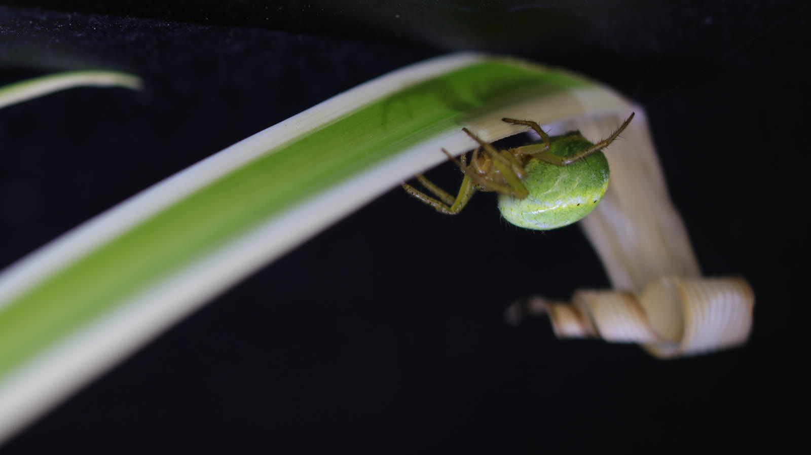

Spiders sense forces we barely notice, engineer several materials inside one body, and solve mechanical problems in ways that continue to inspire research. Here are six facts with evidence attached.
Ruby Chromatopelma cyaneopubescensColour made by structure, not simply pigment
Six closer looks
What the evidence shows.
Short version first, source directly underneath. Scientific findings are presented as findings—not stretched into folklore.
01 · Flight

A local spider beneath a grass blade; the photograph does not show ballooning itself.
Electric fields can help trigger ballooning.
Experiments found that atmospheric-strength electric fields can elicit ballooning behaviour in spiders. Fine sensory hairs respond to these fields, adding another cue to the better-known role of air movement.
Ruby’s blue is a visible example of structural colour in tarantulas.
Tarantula blue evolved again and again.
Across tarantulas, vivid blue has evolved independently multiple times. Different microscopic structures can produce a strikingly similar blue—an example of repeated evolution arriving at a conserved visual result.
Eight legs coordinate pressure, muscle, elasticity, and momentum.
Spider legs use a hybrid power system.
Muscles flex the joints, while haemolymph pressure helps extend joints that lack extensor muscles. In large spiders, movement is not “hydraulics only”—muscle, pressure, elasticity, and momentum all contribute.
Spider setae include specialised sensors; this portrait shows their remarkable density.
Some spiders detect airborne sound.
Jumping spiders respond to low-frequency airborne sound even though they have no eardrums. The evidence points to extremely sensitive hairs that move with the air and convert that movement into sensory information.
Sabrina after renewal; the image does not document limb regeneration.
Young tarantulas can regenerate a leg.
Juvenile tarantulas can adapt their gait soon after losing a limb, then regain a functional replacement through later molts. Regeneration depends on continued growth and is not a reason to treat limb loss lightly.
A silk field can extend a spider’s sensory world far beyond its body.
A web is also an information network.
Silk carries vibrations whose transmission changes with the material’s tension and structure. For many spiders, the web is not only architecture or a trap; it extends the animal’s sensory world.
Silk as structure and signal Chilobrachys sp. “Kaeng Krachan”
Keep exploring
Facts become richer in context.
Anatomy explains the structures behind these abilities. The research journal follows new discoveries as they are published, while the collection profiles connect broader biology to individual animals in care.